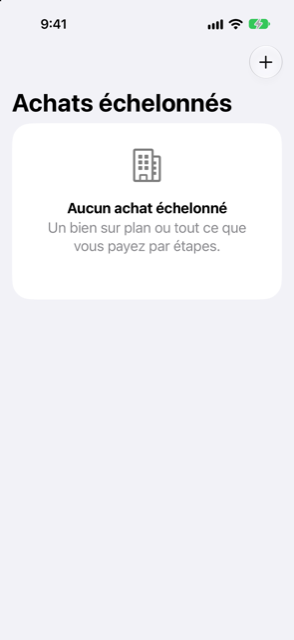

Guide › Placements
Achats échelonnés
Un bien sur plan ou tout ce qui se paie en plusieurs étapes.
Un achat échelonné est la trace que Damla garde d'une chose que vous payez en étapes datées, comme un appartement sur plan. Il montre ce que vous avez déjà payé et ce qui reste à venir. Les paiements encore à venir entrent dans votre prévision, pour que l'argent soit prêt quand chaque étape arrive à échéance.

Quand l'utiliser
- Vous achetez un bien sur plan et le promoteur demande des paiements à des dates connues.
- Vous payez autre chose en plusieurs étapes, comme un terrain ou une grosse commande payée en plusieurs fois.
- Vous avez déjà payé quelque chose dessus, comme un acompte, et vous voulez que ce soit compté.
- Vous voulez que le bien devienne un placement dans votre patrimoine net au moment de la livraison.
Où le trouver
Ouvrez Plan, puis Achats échelonnés. Vous pouvez aussi accéder à un achat échelonné depuis Comptes, sous Actifs.
Étape par étape
Créer un achat
- Sur l'écran Achats échelonnés, touchez Ajouter (le bouton plus).
- Saisissez un nom, le promoteur ou le vendeur (facultatif), le Prix total, et le compte Généralement payé depuis.
- Sous Payé avant Damla, saisissez ce que vous avez déjà payé sous Déjà payé et sa date Payé le. C'est compté comme payé, et aucun solde de compte ne change.
- Sous Paiements à venir, ajoutez chaque paiement daté que vous connaissez : une Échéance et un Montant. Touchez Ajouter un autre paiement pour chacun des suivants.
- Touchez Enregistrer.
La page de l'achat montre une carte Payé jusqu’ici avec une barre de progression, le prix, ce qui est payé, ce qui est Planifié, et ce qui est Pas encore planifié.
Le tenir à jour
- Ouvrez l'achat.
- Touchez un paiement pour changer sa date ou son montant, ou balayez-le pour le supprimer. Pour en ajouter un, touchez Ajouter un paiement.
- Touchez la ligne Prix pour changer le prix total.
- Si vous avez oublié un paiement que vous avez fait avant de commencer à utiliser Damla, utilisez la section Déjà payé avant Damla : saisissez le montant et la date, puis touchez Enregistrer.
- Quand vous payez une échéance depuis un compte, utilisez Enregistrer un paiement : saisissez le montant, choisissez Payé depuis, et touchez Enregistrer. Les paiements enregistrés règlent d'abord les paiements planifiés les plus anciens.
Chaque paiement de la liste montre sa date et son montant et ce qui reste dû : payé quand il ne reste rien, ou le montant restant en rouge avec dû maintenant quand il est en retard.
Livraison
- Sur la page de l'achat, touchez Livré : déplacer vers les Placements.
- Saisissez la valeur du jour dans le champ Valeur du bien.
- Damla vous dit quel montant des paiements planifiés sera retiré de votre prévision, ou dit qu'il ne reste rien à payer.
- Touchez Déplacer vers les Placements pour confirmer.
L'achat cesse d'être un achat échelonné et devient un placement : ce que vous avez payé reste son coût, et la valeur du jour que vous avez saisie devient sa valeur. Voir Biens et voitures.
Bon à savoir
À voir aussi
Quelque chose n’est pas clair ou manque ? Écrivez à support@raveniq.ai en indiquant la page.